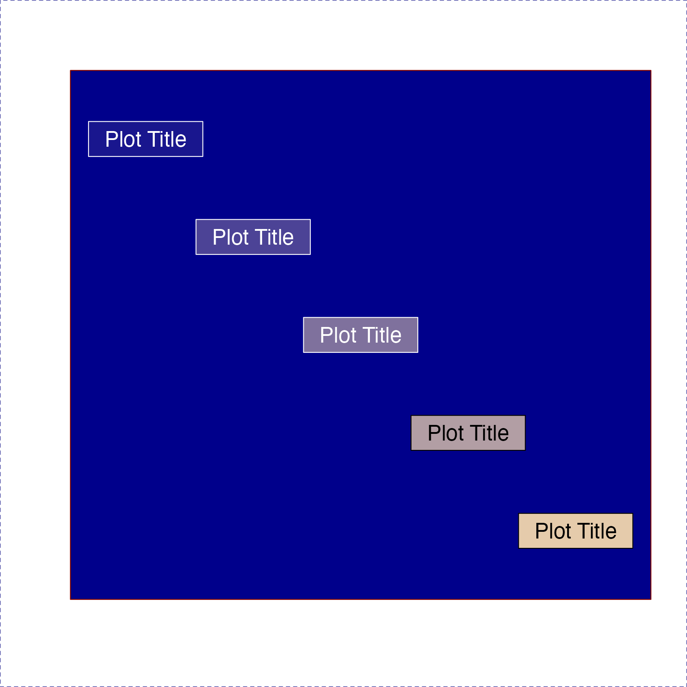
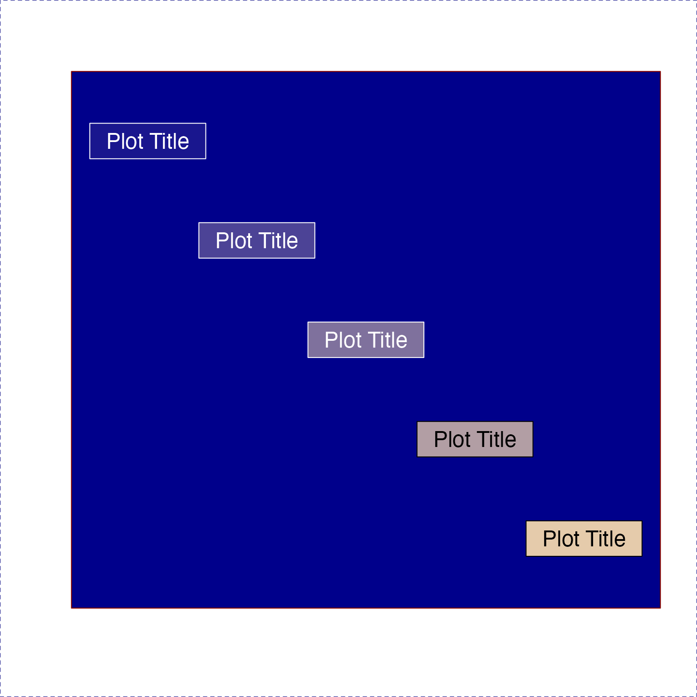

Given a vector or colors, define a contrasting color for text,
typically using either white or black. The useGrey argument
defines the offset from pure white and pure black, to use a
contrasting grey shade.
Usage
setTextContrastColor(
color,
hclCutoff = 60,
rgbCutoff = 127,
colorModel = c("hcl", "rgb"),
useGrey = 0,
keepAlpha = FALSE,
alphaLens = 0,
bg = NULL,
...
)Arguments
- color
character vector with one or more R-compatible colors.
- hclCutoff
numeric threshold above which a color is judged to be bright, therefore requiring a dark text color. This comparison uses the L value from the
col2hcl()function, which scales colors from 1 to 100.- rgbCutoff
numeric threshold above which a color is judged to be bright, therefore requiring a dark text color. The mean r,g,b value is used.
- colorModel
Either 'hcl' or 'rgb' to indicate how the colors will be judged for overall brightness. The 'hcl' method uses the L value, which more reliably represents overall visible lightness.
- useGrey
numeric threshold used to define dark and bright text colors, using the R greyscale gradient from 0 to 100:
useGrey=10implies"grey10"and"grey90"for the contrasting text colors;useGrey=15is useful if labels may also overlap white or black space, since the text will never be fully white or black.- keepAlpha
logical indicates whether the input color alpha transparency should be maintained in the text color. By default, text alpha is not maintained, and instead is set to alpha=1, fully opaque.
- alphaLens
numeric value used to adjust the effect of alpha transparency, where positive values emphasize the background color, and negative values emphasize the foreground (transparent) color.
- bg
vector of R colors, used as a background when determining the brightness of a semi-transparent color. The corresponding brightness value from the
bgis applied via weighted mean to the inputcolorbrightness, the result is compared the the relevant cutoff. By defaultgraphics::par("bg")is used to determine the default plot background color, only when there is an open graphics device, otherwise callinggraphics::par("bg")would open a graphics device, which is not desireable. When no graphics device is open, and whenbg=NULL, the default isbg="white".- ...
additional arguments are ignored.
Details
The color is expected to represent a background color, the
output is intended to be a color with enough contrast to read
text legibly.
The brightness of the color is detected dependent upon
the colorModel: when "hcl" the luminance L is compared
to hclCutoff; when "rgb" the brightness is the sum of
the RGB channels which is compared to rgbCutoff. In most
cases the "hcl" and L will be more accurate.
When color contains transparency, an optional argument bg
represents the figure background color, as if the color is
used to draw a color-filled rectangle. In this case, the bg
and color are combined to determine the resulting actual color.
This scenario is mostly useful when plotting text labels on
a dark background, such as black background with colored
text boxes.
See also
Other jam color functions:
alpha2col(),
applyCLrange(),
col2alpha(),
col2hcl(),
col2hsl(),
col2hsv(),
color2gradient(),
fixYellow(),
fixYellowHue(),
getColorRamp(),
hcl2col(),
hsl2col(),
hsv2col(),
isColor(),
kable_coloring(),
makeColorDarker(),
rainbow2(),
rgb2col(),
setCLranges(),
showColors(),
unalpha(),
warpRamp()
Examples
color <- c("red","yellow","lightblue","darkorchid1","blue4");
setTextContrastColor(color);
#> [1] "#FFFFFFFF" "#000000FF" "#000000FF" "#FFFFFFFF" "#FFFFFFFF"
# showColors() uses setTextContrastColor() for labels
showColors(color)
 # printDebugI() uses setTextContrastColor() for foreground text
printDebugI(color)
#> ## (21:41:32) 03Mar2025: red,yellow,lightblue,darkorchid1,blue4
# demonstrate the effect of alpha transparency
colorL <- lapply(nameVector(c(1, 0.9, 0.8, 0.6, 0.3)), function(i){
nameVector(alpha2col(color, alpha=i), color);
})
jamba::showColors(colorL,
groupCellnotes=FALSE,
srtCellnote=seq(from=15, to=-15, length.out=5));
graphics::title(ylab="alpha", line=1.5);
# printDebugI() uses setTextContrastColor() for foreground text
printDebugI(color)
#> ## (21:41:32) 03Mar2025: red,yellow,lightblue,darkorchid1,blue4
# demonstrate the effect of alpha transparency
colorL <- lapply(nameVector(c(1, 0.9, 0.8, 0.6, 0.3)), function(i){
nameVector(alpha2col(color, alpha=i), color);
})
jamba::showColors(colorL,
groupCellnotes=FALSE,
srtCellnote=seq(from=15, to=-15, length.out=5));
graphics::title(ylab="alpha", line=1.5);
 # change background to dark blue
withr::with_par(list("bg"="navy", "col"="white", "col.axis"="white"), {
jamba::showColors(colorL,
groupCellnotes=FALSE,
srtCellnote=seq(from=15, to=-15, length.out=5))
graphics::title(ylab="alpha", line=1.5);
})
# change background to dark blue
withr::with_par(list("bg"="navy", "col"="white", "col.axis"="white"), {
jamba::showColors(colorL,
groupCellnotes=FALSE,
srtCellnote=seq(from=15, to=-15, length.out=5))
graphics::title(ylab="alpha", line=1.5);
})
 # Example using transparency and drawLabels()
bg <- "blue4";
col <- fixYellow("palegoldenrod");
nullPlot(fill=bg, plotAreaTitle="", doMargins=FALSE);
for (alpha in c(0.1, 0.3, 0.5, 0.7, 0.9)) {
labelCol <- setTextContrastColor(
alpha2col("yellow", alpha),
bg=bg);
drawLabels(x=1 + alpha,
y=2 - alpha,
labelCex=1.5,
txt="Plot Title",
boxColor=alpha2col(col, alpha),
boxBorderColor=labelCol,
labelCol=labelCol);
}

# Example using transparency and drawLabels()
bg <- "blue4";
col <- fixYellow("palegoldenrod");
nullPlot(fill=bg, plotAreaTitle="", doMargins=FALSE);
for (alpha in c(0.1, 0.3, 0.5, 0.7, 0.9)) {
labelCol <- setTextContrastColor(
alpha2col("yellow", alpha),
bg=bg);
drawLabels(x=1 + alpha,
y=2 - alpha,
labelCex=1.5,
txt="Plot Title",
boxColor=alpha2col(col, alpha),
boxBorderColor=labelCol,
labelCol=labelCol);
}
